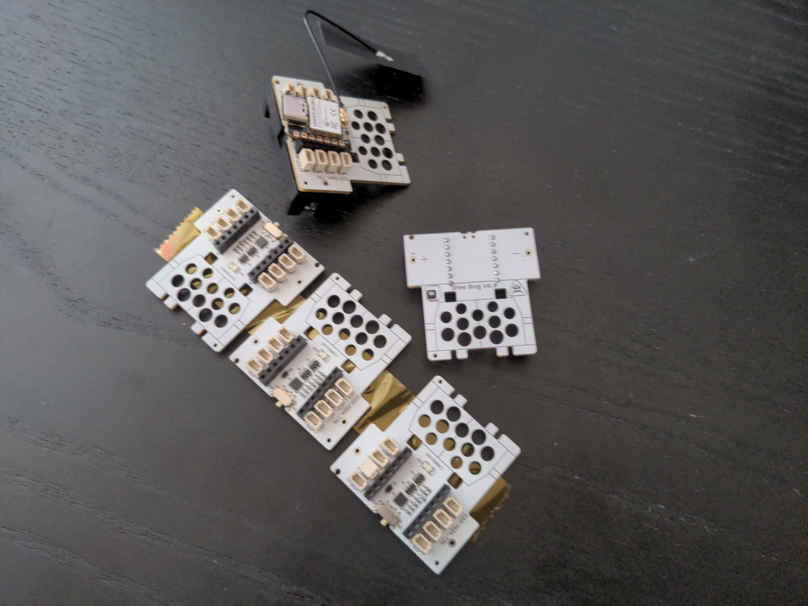
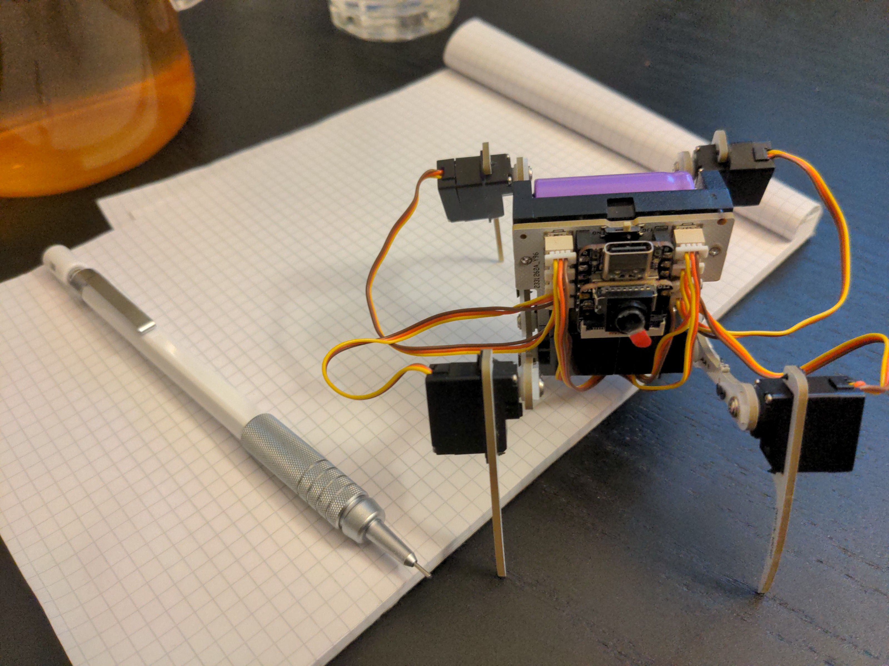

Version 6.0¶
Published on 2023-09-30 in Wee Bug.
That last prototype I mentioned in the last log finally arrived on Friday:
And I got it all assembled and programmed today:
I also have the camera and the accelerometer working, though I don’t really do anything interesting with them yet. You can see that I re- used the servos that already had the cables shortened to the right lengths, so as to not be an unholy mess of wires, but if I didn’t, I could tuck all the extra cables under the microcontroller board, plenty of space there. There is also a WiFi antenna hidden under the battery – the Xiao ESP32-S3 Sense board I used here comes with an external antenna.
The bigger battery and longer legs work fine – the servos are easily strong enough to take it, and the hind legs don’t need to move so high that they would collide with the battery.
I’m really happy with it, and now I should be focusing on the software side of things, making the movements smoother, making use of that camera and accelerometer, and generally teaching it more tricks.
I also want to try it with boards that are more or less compatible with Xiao, like the Adafruit QtPy, or Waveshare Zero. The latter will stick out a bit, and will need to be inserted up-side-down, but the extra pins could be useful for a display shield.